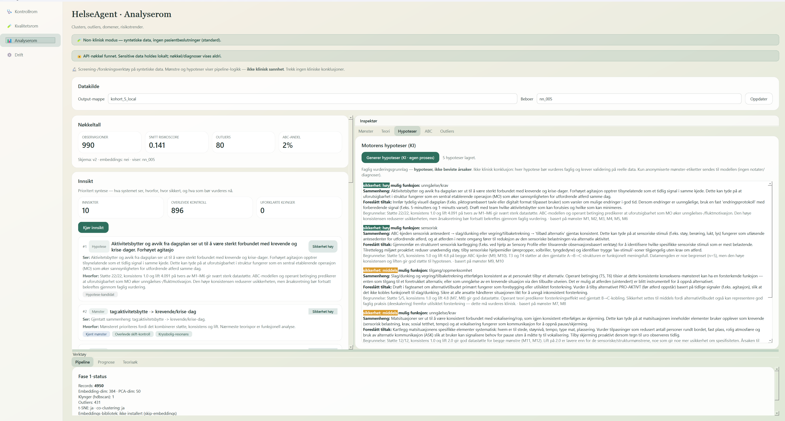
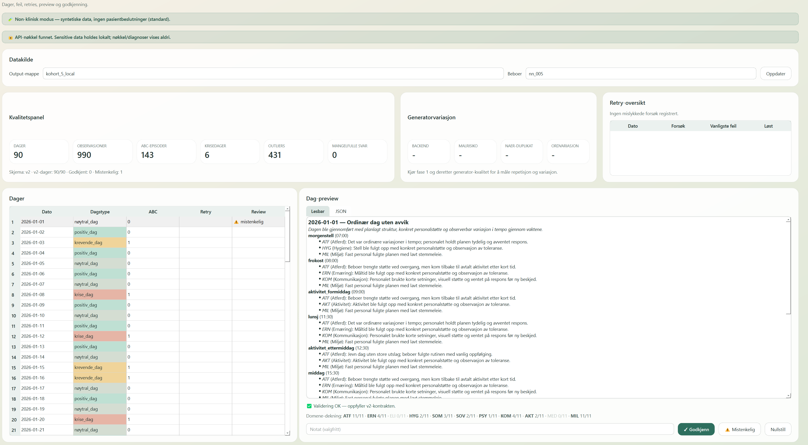

Boliger står alene med det
Boliger står ofte lenge med utfordrende atferd uten at noen gjør en systematisk analyse. Habiliteringstjenestene har lange ventelister.
Intelligent Mønsteranalyse
IMA leser pleiedokumentasjon og løfter fram gjentakende sammenhenger som sporbare hypoteser. Målet er en mer forutsigbar hverdag for beboeren, mindre belastning for ansatte, og et tydeligere beslutningsgrunnlag for ledere. Fagpersonen vurderer. Systemet konkluderer aldri.
01 · Problemet
Erfarne ansatte har en magefølelse om hva som utløser hva. Problemet er at magefølelse ikke kan overleveres til en vikar, og at den ikke holder som grunnlag for et vedtak.
Boliger står ofte lenge med utfordrende atferd uten at noen gjør en systematisk analyse. Habiliteringstjenestene har lange ventelister.
Sammenhengene ligger i journalnotatene, men fordelt over hundrevis av notater og på tvers av vakter. Personalet står midt i det og ser dem ikke.
Den som har jobbet lengst vet mest. Når vedkommende har fri, er kunnskapen borte – og nyansatte og vikarer må gjette seg fram.
02 · Løsningen
Vi gjør strukturert atferdsanalyse etter ABC-modellen av journalnotater ved hjelp av maskinlæring. Men det unike er ikke teknologien alene – det er at analysen leveres sammen med helsefaglig og psykologfaglig vurdering. Vi selger ikke programvare en bolig må finne ut av selv.
Vurderingsperioder er avgrenset i tid. Tjenesten er ikke løpende overvåking. Kliniske konklusjoner ligger hos lisensiert psykolog, ikke i systemet.
03 · Demo
Velg et funn og se hele veien: observasjon, klyngefunn, ABC-kjede, hypotese og forsiktighetsmerking. Alle eksempler er syntetiske.


04 · Team
05 · Status og potensial
Verktøyet kjører i dag på syntetiske data i non-klinisk modus. Skillet mellom non-klinisk og klinisk bruk er håndhevet i kode, ikke bare beskrevet i et dokument. Neste steg er pilot på reelle data når personvernrammene er på plass.
Kjørende kode med automatiske tester.
Alternativet for kommunen er ofte økt bemanning. Et halvt årsverk koster 400–500 000 kroner hvert år, hvert år. En utredning som påvirker vedtak og tiltak betaler seg mange ganger.
Bygget for omsorgsboliger. Første retning er PU, rus og psykiatri. Barnevern og tilgrensende felt senere.
06 · Behov